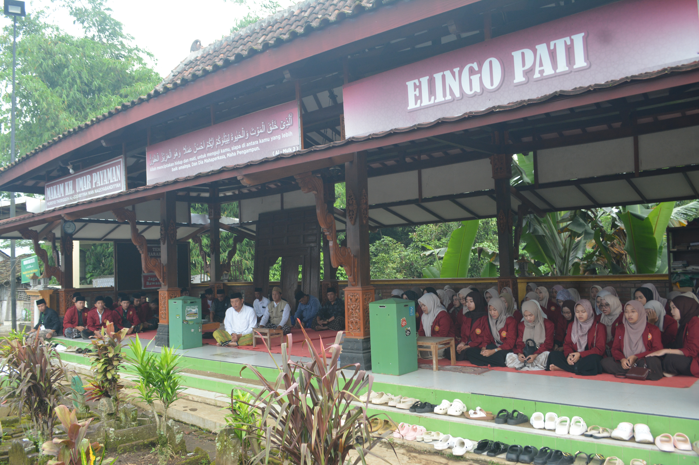

Program Pendidikan
Pondok Pesantren Annashiiha Salatiga menyelenggarakan berbagai program pendidikan yang memadukan pendidikan keislaman, pembinaan karakter, serta pengembangan kemandirian santri. Program yang diselenggarakan meliputi:
-
Program Pembelajaran Agama (Ta'lim) dan Pengajian Kitab Kuning
Program ini menjadi bagian utama dalam pendidikan pesantren yang berfokus pada pendalaman ilmu keislaman melalui kegiatan ta'lim dan pengajian kitab kuning. Santri dibimbing untuk memahami ajaran agama sekaligus menerapkannya dalam kehidupan sehari-hari.
-
Program Pesantren Entrepreneur
Pondok Pesantren Annashiiha mengembangkan program kewirausahaan sebagai upaya membentuk santri yang memiliki kemandirian ekonomi dan keterampilan berwirausaha. Kegiatan entrepreneur juga memanfaatkan media sosial sebagai sarana pembelajaran, promosi, dan pengembangan usaha.
-
Program Pembinaan Santri Pelajar dan Mahasiswa
Program ini ditujukan bagi santri yang berasal dari jenjang SMP, SMA/SMK, hingga perguruan tinggi. Pembinaan diarahkan untuk membantu santri menyeimbangkan pendidikan formal dengan pendidikan keagamaan dan kehidupan pesantren.
-
Program Ngaji Rutinan Selapan
Kegiatan ngaji rutinan selapan menjadi salah satu kegiatan keagamaan yang dilaksanakan secara berkala. Program ini menjadi sarana untuk memperkuat pemahaman keagamaan sekaligus mempererat hubungan antara santri, pengasuh, pengajar, dan masyarakat.
Kurikulum
Kurikulum Pondok Pesantren Annashiiha Salatiga mengintegrasikan kurikulum keagamaan tradisional pesantren dengan pembelajaran kewirausahaan dan pemasaran digital.
Dalam bidang keagamaan, santri mendapatkan pembelajaran melalui kajian kitab-kitab pesantren, salah satunya Ta'limul Muta'allim, yang membahas adab dan tata cara dalam menuntut ilmu.
Sementara itu, dalam bidang kewirausahaan, santri diperkenalkan dengan berbagai keterampilan yang berkaitan dengan wirausaha, pemasaran digital, dan pemanfaatan media sosial.
Integrasi tersebut diharapkan dapat memberikan keseimbangan antara penguasaan ilmu keagamaan dengan keterampilan yang dapat diterapkan dalam kehidupan dan dunia kerja.
Metode Pembelajaran
Metode pembelajaran yang diterapkan di Pondok Pesantren Annashiiha disesuaikan dengan karakteristik masing-masing bidang pendidikan.
Dalam pembelajaran keagamaan, digunakan metode sorogan dan bandongan. Metode tersebut menjadi bagian dari tradisi pembelajaran pesantren yang memungkinkan santri mempelajari dan memahami isi kitab secara langsung dengan bimbingan pengajar.
Sementara dalam pembelajaran kewirausahaan, santri mendapatkan pelatihan dan praktik melalui pengerjaan proyek bisnis secara mandiri. Kegiatan tersebut diarahkan pada pencapaian target usaha, termasuk target omzet bulanan, sehingga santri tidak hanya memperoleh pengetahuan secara teoritis, tetapi juga mendapatkan pengalaman dalam menjalankan kegiatan usaha secara langsung.
Melalui perpaduan metode pembelajaran tradisional dan praktik kewirausahaan, Pondok Pesantren Annashiiha berupaya membentuk santri yang memiliki pemahaman agama, akhlak, keterampilan, dan kemandirian.
